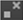

If you’ve already drawn a stroke/shape but wish to make changes to it, you can select it or certain parts of it with the RotoPaint selection tools. You can also toggle between all of them in the RotoPaint toolbar using the shortcut Q.
When you click on a point in a stroke/shape, the point changes color to indicate whether it’s in focus (green by default) and whether it has an expression set (red by default). You can change the default colors on the Viewers tab in the Preferences.
You can also use the controls in the RotoPaint tool settings to display and hide information such as points, point numbers, splines, and transform handles. See To Adjust Display Properties for Selected Shapes/Strokes below.
Whenever you have a Select tool active, the RotoPaint tool settings allow you to control what information is displayed for the visible shapes/strokes and points in the Viewer:
• To view or hide the numbers for visible shape/stroke points, toggle the label points button  . Feather points are marked with a bracketed number corresponding their shape point, so for example, if a shape point is marked with the number 2, its feather point is marked with [2].
. Feather points are marked with a bracketed number corresponding their shape point, so for example, if a shape point is marked with the number 2, its feather point is marked with [2].
• To view or hide the splines in visible shapes, toggle the hide splines button .
• To view or hide the splines in visible paint strokes, enable show paint stroke splines  and toggle the hide splines button .
and toggle the hide splines button .
• To view or hide the points (and tangent handles) in visible shapes/strokes, toggle the hide points button  .
.
• To view or hide the transform handle jack or transform box for visible shapes/strokes, toggle the hide transform handles button  (or press T on the Viewer).
(or press T on the Viewer).
• To hide the transform handle jack or transform box when moving a selection, click the hide transform handles on move button  . This may make it easier to correctly position your selection.
. This may make it easier to correctly position your selection.
| 1. | Click the Select All tool |
| 2. | Select the stroke/shape you wish to edit either by clicking on it in the Viewer or by clicking on its name in the stroke/shape list. To select several strokes/shapes, Ctrl/Cmd+click or Shift+click (to select a range) their names in the stroke/shape list. You can have both splines and points selected simultaneously. |
When selecting strokes/shapes in the Viewer, you can invert your selection by right-clicking and selecting invert selection. All strokes/shapes you didn’t have selected before are now selected.
If you want to move the selected stroke/shape, drag a selection box around the entire shape until a box forms around the shape. Pulling on the cross at the center of the shape allows you to move it around the Viewer. A keyframe is automatically added when you move a stroke/shape, if autokey is enabled. For information on autokey and creating keyframes, see Animating Strokes/Shapes.
TIP: To select points in a paint stroke and view your selection in the Viewer, you have to enable show paint stroke splines in the tool settings.
TIP: By default, if you have selected a stroke/shape in the Viewer or the stroke/shape list, clicking on an empty area in the Viewer does not deselect it. If you’d like to change this behavior, you can disable constant selection mode  in the RotoPaint tool settings.
in the RotoPaint tool settings.
| 1. | Right-click the Select All tool and select the Select Splines tool |
| 2. | Make sure hide splines |
| 3. | Select the spline you wish to edit either by clicking on it in the Viewer or by clicking on its name in the stroke/shape list. You can also click-and-drag a selection box around the shape with Select Splines active. Selecting a spline only selects the spline, not points within it. |
TIP: Using the Select Splines tool, you can also duplicate the stroke/shape you’ve selected. Just right-click on one of the points, and select duplicate. A new stroke/shape is created with the same spline and attributes as the one you selected.
| 1. | Right-click the Select All tool and select the Select Points tool |
| 2. | Make sure hide points |
| 3. | Select the stroke/shape you wish to edit by clicking on its name in the stroke/shape list and then select a point in the Viewer. To select several points, Ctrl/Cmd+click on them in the Viewer or use marquee selection to create a transform box. |
Using the Select Points tool restricts selection to one stroke/shape only.
| 1. | Right-click the Select All tool and select the Select Feather Points tool . |
| 2. | Make sure hide points  is disabled in the RotoPaint tool settings. |
| 3. | Select the stroke/shape you want to edit by clicking on its name in the stroke/shape list and then select a feather point in the Viewer. To select several feather points, Ctrl/Cmd+click on them in the Viewer or use marquee selection to create a transform box. |
Using the Select Feather Points tool restricts selection to one stroke/shape only.
| 1. | Right-click the Select All tool and select the Select Points tool . |
| 2. | Make sure hide transform handles |
| 3. | Select points in a stroke/shape with Shift+click or by clicking and dragging across the points you want to select. A transform box appears. |
| 4. | You can also use shortcut T to toggle viewing the transform handle. |
|
|